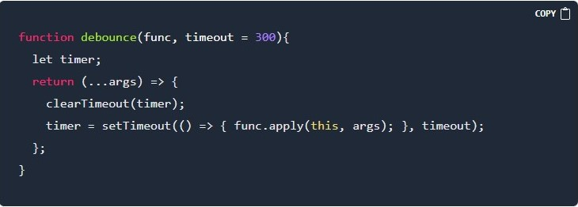

In the last Article, we build a Search feature. In this article, we are going to optimize that feature with Debounce
(if haven't read last article then click here )

But What is debounce?
Debouncing is a programming pattern or technique to frequently restrict the calling of a time-consuming function, by delaying the execution of the function until a specified time to avoid unnecessary API calls, multiply calls and improve performance.
Debounce function is a higher-order function which means the function returns another function.
The common use of this function is a search box,text-field autosave, and to eliminate multiple inputs Now let's code
When the user types the first letter and releases the key, the debounce() first resets the timer with clearTimeout(). well, initially timer is undefined. So nothing resets. then it schedules the function to be invoked in 300ms. If the user keeps typing, so with each key release triggers the debounce () again. that means cancelling the previous timer and rescheduling it for a new time 300 ms in the future. This goes on as long as the user keeps typing under 300 ms. The last schedule won’t get cleared, so the func() will finally be called. the debounce() function can be used on input(expect radio), window events like scroll.
To see implementation in search bar check this Codepen